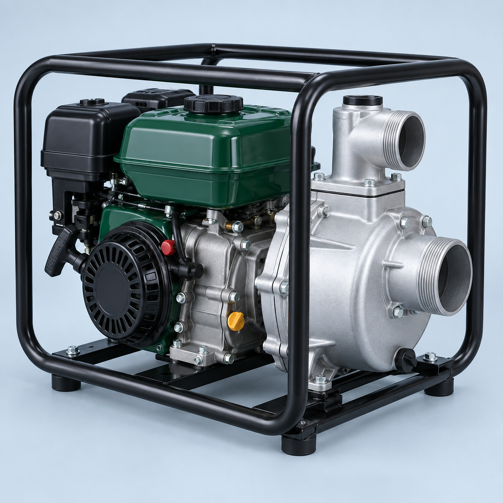

پمپ آب
برای آبیاری مزارع و باغات
برای زمین، برای فردا
تجهیزات کشاورزی و قطعات یدکی را پیدا کنید
و قیمت و شرایط تأمین را استعلام بگیرید.
از انتخاب ابزار، تا ادامهٔ کارِ زمین.

برای آبیاری مزارع و باغات
ریشه در زمین.
نگاه به فردا.
از اینجا شروع کنید
دسترسی سریع به تجهیزات و قطعات کشاورزی
همراه کار شما
از رسیدگی به باغ تا آبیاری مزرعه؛ دستگاه مناسب را انتخاب کنید و مشخصات و شرایط تأمین را بپرسید.
موردی با این جستوجو پیدا نشد.
انتخاب دقیقتر
گروه موردنظر را پیدا کنید؛ قیمت، موجودی و زمان تأمین هر کالا پس از بررسی درخواست اعلام میشود.
موردی با این جستوجو پیدا نشد.
از انتخاب تا تأمین
مشخصات کالا، تعداد و مدل دستگاه را بفرستید. قیمت، موجودی، سازگاری قطعه و زمان تحویل پیش از سفارش بررسی میشود.
درخواست بررسی کالامدل دستگاه، نام قطعه یا تصویر آن
استعلام موجودی و شرایط خرید
انتخاب با اطلاع از جزئیات و زمان تحویل
برای فروشگاهها و خریدهای حجمی
برای سفارشهای چندقلمی یا عمده، مشخصات و تعداد تقریبی را بفرستید تا قیمت و زمان تحویل بررسی شود.
ثبت استعلام عمدهراهنمای انتخاب
نوع کار، مساحت باغ و مدت استفاده، نقطهٔ شروع انتخاب دستگاه هستند.
دریافت مشاوره ابزار ←مدل دستگاه، پارتنامبر و عکس قطعه به بررسی سازگاری کمک میکنند.
مشاوره انتخاب قطعه ←نام کالا و تعداد را بفرستید تا قیمت، موجودی و زمان تحویل بررسی شود.
درخواست استعلام ←یک انتخاب بهتر، با یک گفتوگو
مشخصات محصول یا تصویر قطعه را برای بررسی آماده کنید.
راههای ارتباط رسمی در حال تکمیل است؛ شماره تماس و پیوند واتساپ و تلگرام پس از تأیید در این بخش قرار میگیرد.